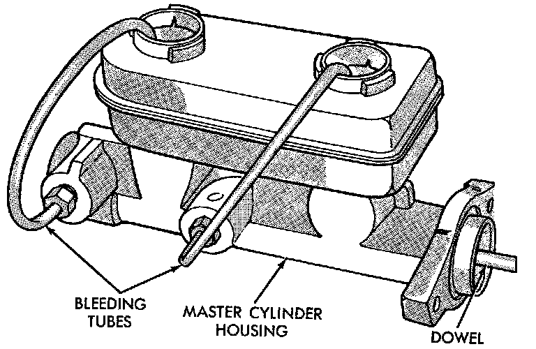
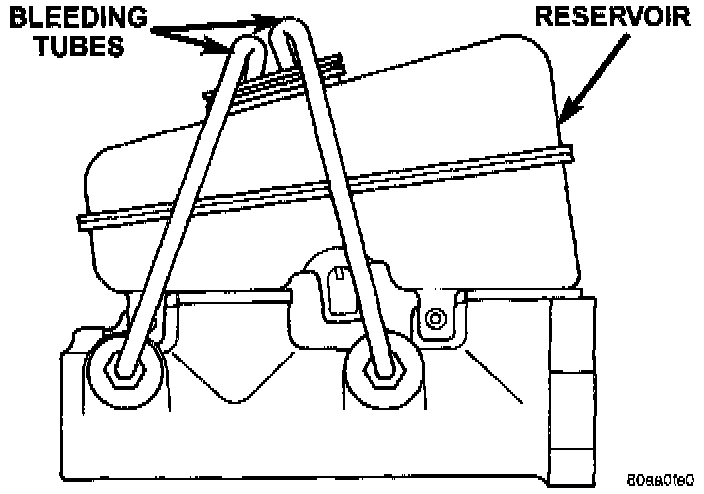

Master Cylinder Bleeding
GENERAL INFORMATIONA new master cylinder should be bled before installation on the vehicle. Required bleeding tools include bleed tubes and a wood dowel to stroke the pistons. Bleed tubes can be fabricated from brake line.
PROCEDURE
1. Mount master cylinder in vise.
Master Cylinder Bleeding:

2. Attach bleed tubes to cylinder outlet ports. Then position each tube end in matching reservoir fluid compartment.
Master Cylinder Bleeding - Typical:

NOTE: If master cylinder has one reservoir opening, position both outlet bleed tubes into the single reservoir opening.
3. Fill reservoir with fresh brake fluid.
4. Press cylinder pistons inward with wood dowel. Then release pistons and allow them to return under spring pressure. Continue bleeding operations until air bubbles are no longer visible in fluid.